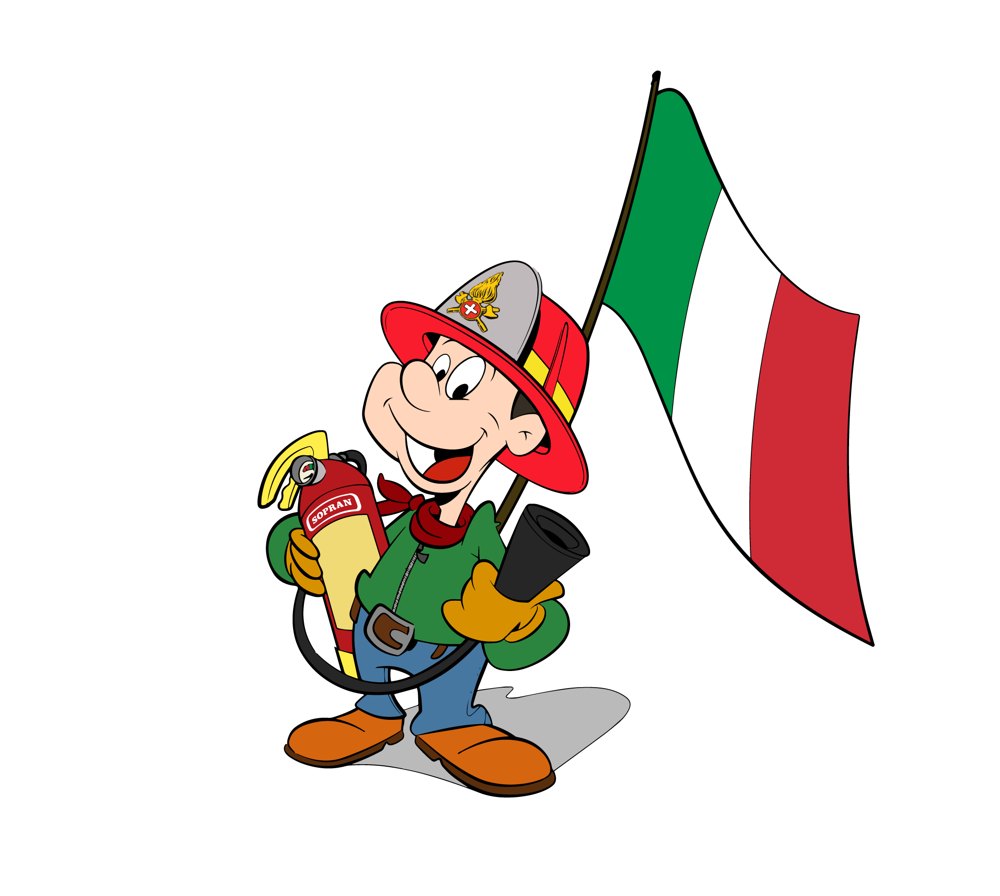

<div class="login-page bodyGradient" style="height: 100%;"  >
    <!-- <mat-toolbar color="primary">
      <button mat-icon-button class="example-icon" aria-label="Example icon-button with menu icon" [matMenuTriggerFor]="menu">
        <mat-icon>menu</mat-icon>
      </button>
      <mat-menu #menu="matMenu">
        <button mat-menu-item (click)="login()">Login</button>
      </mat-menu>
      <span style="margin-left: 40px;">
          Prototipo Manutenzione
      </span>
      <span class="example-spacer"></span>
  </mat-toolbar> -->

  <mat-toolbar class="menuGradient menuShadow">
    <span style="margin-left: 5%;color: white;">
      
   </span>
    <div style="width: 100%; display: flex; justify-content: right; margin-right: 15px;">
      <div>
        <!-- <button mat-icon-button style="opacity: 1;width: 10px;"  >
        </button> -->
        <mat-icon style="opacity: 1;color: rgb(0, 42, 251);" [matMenuTriggerFor]="menu">more_vert</mat-icon>
        <mat-menu #menu="matMenu">
          <button mat-menu-item (click)="login()">
            <!-- <mat-icon>login</mat-icon> -->
              <span>Login</span>
          </button>
        </mat-menu>
      </div>
    </div>
    <span class="example-spacer">
    </span>
    
  </mat-toolbar>
  <!-- <div class="container" style="justify-content: center;">
    <div style=" text-align: center;background-color:#1f1b3e;width: 40%;height: 50%;" class="row" >
        <h1 style="color: rgb(3, 213, 255);">Especialisti della sicurezza, dal 1933</h1>
    </div>
    <div class="row">
        
    </div>
  </div> -->

  <div class="container" >
    <div style="text-align: left;" class="box">
      <!-- <h1 style="color: rgb(7, 83, 234);font-size: clamp(23px, 4vw, 63px); font-weight: 400;text-align: center;margin-top: 10%;">Specialisti della sicurezza,</h1>
      <h1 style="color: rgb(7, 83, 234); font-size: clamp(23px, 4vw, 63px); font-weight: 400;text-align: center;text-align: center; margin-top: 5%;">dal 1933</h1> -->
      <!-- <span style="color: rgb(7, 83, 234);font-size: 25px;">
        SopranCiodue fornisce consulenza a 360° 
        nei settori chiave della sicurezza sul lavoro:
        antifortunistica, progettazione e manutenzione di impianti antincendio e
        benessere organizzativo. Offriamo un servizio su misura e prodotti moderni e 
        tecnologicamente avanzati.
      </span> -->
    </div>
    <div style=" text-align: center;" class="box" >
      
    </div>
  </div>
  
</div>
  
    